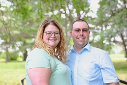
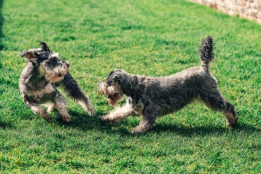

About Us
First opening our doors in 2022, we are dedicated family-owned business here for your pet boarding needs. Whether it be doggy day care for busy working pet parents or a vacation for your four-legged friend while you are traveling. You can ensure that our staff will take care of your fur child like they are our own.
Deppe K9 Care is owned and operated by husband-and-wife duo Jason and Jennifer Deppe. They opened their business to help care for other pets while owners are at work or on vacation. They are pictured above.
Our Facilities
The daycare area has two areas for play, one accommodating large dogs and the other is for smaller dogs. Your pet would play with friends only of the appropriate size. Each area offers a pool, plenty of water stations, an abundance of toys, and a large area for play.
Our boarding facilities accommodate up to 30 pets at one time. We offer individual climate-controlled kennels that also have doggy door leading out to an outdoor area. During your pets stay they will have two 30-minute outdoor play times during the day. They are taken out to our fenced in dog park and allowed to run and play with staff. The care they receive as well includes feeding, plenty of water changes throughout the day, and their kennels are cleaned out multiple times a day to adhere to safety and cleanliness standards.